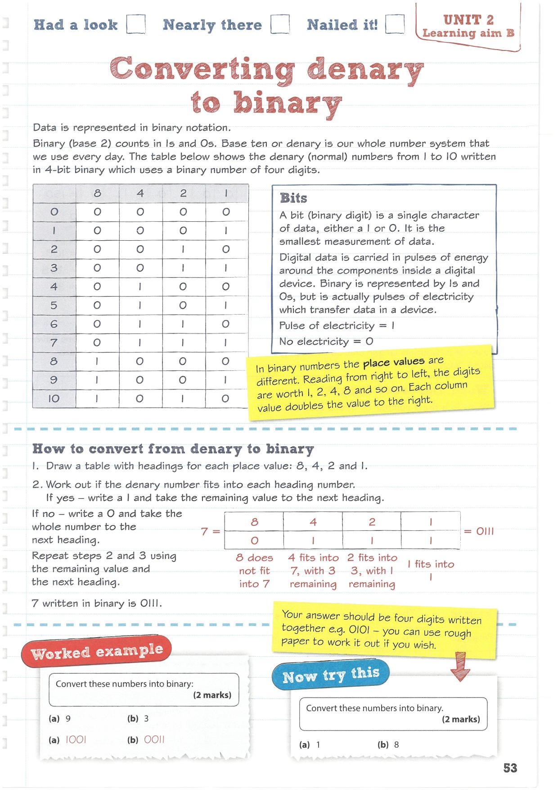

---
redirect_from:
  - "/aimb/b07"
title: |-
  Converting denary to binary
pagenum: 20
prev_page:
  url: /aimB/B06.html
next_page:
  url: /aimB/B08.html
suffix: .md
search: converting denary binary images b jpg

comment: "***PROGRAMMATICALLY GENERATED, DO NOT EDIT. SEE ORIGINAL FILES IN /content***"
---

    <main class="jupyter-page">
    <div id="page-info"><div id="page-title">Converting denary to binary</div>
</div>
    <div class="jb_cell">

<div class="cell border-box-sizing text_cell rendered"><div class="inner_cell">
<div class="text_cell_render border-box-sizing rendered_html">
<p></p>

</div>
</div>
</div>
</div>

 


    </main>
    